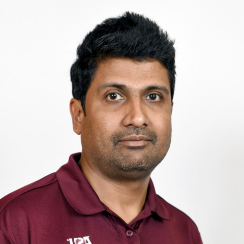

Extended reality
AR, VR, and motion capture systems that connect human movement with digital experiences.
Educator. Computer scientist. Maker.
At the intersection of
code, creativity & connection.
Exploring what happens when digital experiences meet the physical world. Teaching the next generation to build what comes next.

01 / A LITTLE ABOUT ME
I turn curiosity into things you can interact with.
I'm an Assistant Professor of Extended Reality Technologies in the School of Games, Arts, Media and Engineering at Arizona State University, and Honors Faculty at Barrett, The Honors College.
My work connects extended reality, the Internet of Things, and full-stack computing. From wearable technologies to motion capture for AR/VR, I'm interested in technology that moves beyond the screen and into our communities.
Outside the classroom, I'm a co-founder and computer scientist at Foxy Ninja Studios, working across full-stack development, IoT consulting, and product design.
02 / AREAS OF EXPLORATION
The most interesting work happens where fields overlap. These are the spaces I explore.
AR, VR, and motion capture systems that connect human movement with digital experiences.
Internet of Things, wearables, and real-time systems that bring computation into the physical world.
Full-stack cloud computing and web technologies as tools for creative expression and connection.
Hands-on teaching and community-embedded projects that turn technical concepts into lived experience.
03 / SELECTED WORK
Real-time monocular webcam video to BVH motion data, built with MediaPipe pose estimation.
An open curriculum introducing HTML5, CSS, and JavaScript through hands-on web development.
Explore the code and course materials from AME 494/598, Fall 2022.
Code and learning resources from AME 470/570, Spring 2017, at the intersection of media and technology.
04 / IN THE CLASSROOM
I believe the best way to understand technology is to build with it. My teaching helps students connect fundamentals with real-world, creative applications.
Teaching at ASUBuild a foundation in HTML, CSS, and JavaScript. Bring ideas to life in the browser.
Connect code to the physical world through devices, sensors, and connected systems.
Explore web experiences designed around people, participation, and interaction.
Course titles from my ASU profile. Offerings vary by semester.
05 / START A CONVERSATION
Have a research idea, a project in mind, or a question about my work?
I'd love to hear what you're thinking.